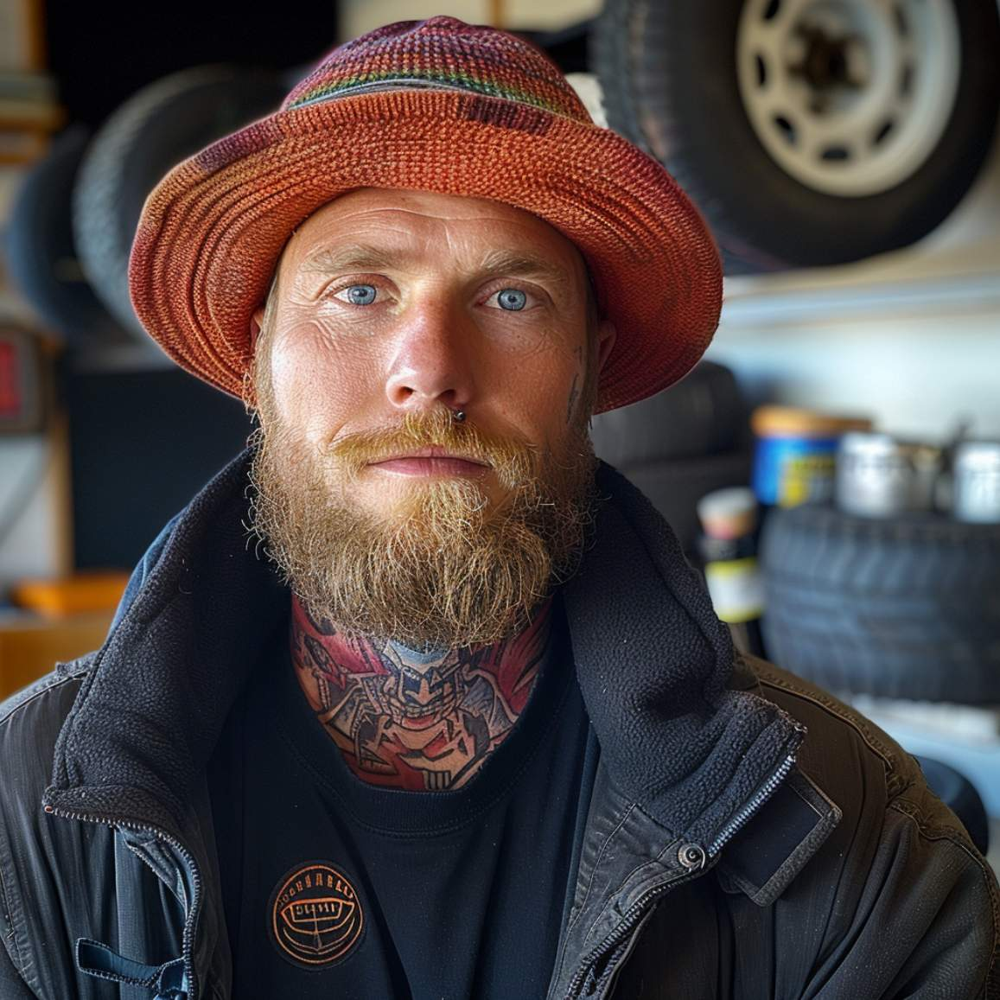

Pelle Järvinen
21.08.2024

Päivämäärä: 14. huhtikuuta 2024
Diagnoosi: Lievä-kohtalainen ahdistus
Kuvaus: Potilas kuvailee jatkuvaa huolta, ahdistusta ja sydämentykytystä, joka on pahentunut veljen kuoleman jälkeen. Suositellaan terapiaa ja ahdistuksen hallintaa.
Päivämäärä: 12. huhtikuuta 2024
Diagnoosi: Akuutti surureaktio
Kuvaus: Potilas hakeutui hoitoon veljen kuoleman jälkeen 11. huhtikuuta 2024. Hän kokee voimakasta surua, univaikeuksia ja keskittymisongelmia. Suositellaan keskusteluterapiaa ja psykologista tukea.
Päivämäärä: 15. toukokuuta 2019
Diagnoosi: Jännityspäänsärky
Kuvaus: Potilas hakeutuu hoitoon toistuvan voimakkaan päänsäryn vuoksi, pääasiassa iltapäivisin. Kliininen tutkimus osoitti jännityspäänsäryn merkkejä ilman muita vakavia oireita. Suositeltu lepo, stressinhallinta ja itsehoitolääkkeitä.